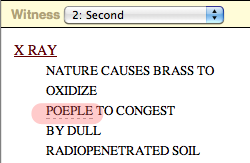
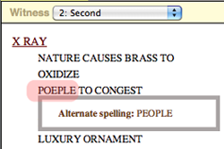
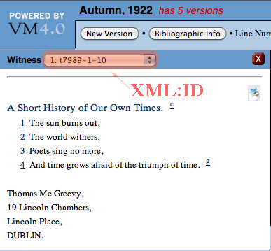
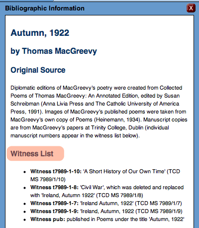
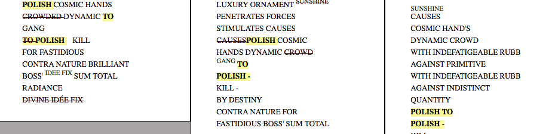

Documentation
Versioning Machine 4.0
- Overview
- Installation & Requisites
- Encoding: The Basics
- Encoding: Using Critical Apparatus Tagset
- Line Numbering
- Witness Detail
- Viewing Your XML Files with Native Browser Support
- Technical Information
Overview
The Versioning Machine (VM) is a software tool designed by literary scholars, programmers, and web designers at several institutions, including the Digital Humanities Observatory (DHO), the Maryland Institute for Technology in the Humanities (MITH), and the Office of Digital Collections and Research (DCR) at University of Maryland Libraries. The VM not only provides for features traditionally found in codex-based critical editions, such as annotation and introductory material, but takes advantage of opportunities of electronic publishing, such as providing a frame to compare diplomatic versions of witnesses side by side, allowing for images of the witness to be viewed alongside the diplomatic edition, and providing users with an enhanced typology of notes. The Versioning Machine 1.0 was launched at the 2002 ALLC/ACH (Association for Literary and Linguistic Computing/Association for Computers and the Humanities) Conference in Tubingen, Germany, July 2002. Version 4.0 was released June 2010.
The VM supports display of XML texts encoded according to the P5 Guidelines of the Text Encoding Initiative (TEI). To display texts in the VM, you must use the TEI's "critical apparatus tagset" (TEI.textcrit) to encode all witnesses in one XML file. Because the critical apparatus tagset offers the most efficient and thorough methodology for inscribing variants in a structured, machine-readable format, choosing this method can be more complicated in terms of markup but rewards the editor in efficiency in encoding. Because using the critical apparatus tagset is at first challenging, instructions to augment the TEI Guidelines are provided below.
Installation & Requisites
To install VM 4.0 locally, fill out the registration form on the
VM website to download the zip file that contains a diretory that
can be installed on any
hard drive. Once downloaded, use an
unzipping program like WinZip to extract all files in the
archive. The contents should unzip into a folder entitled
v-machine. To view a description of the product, documentation,
and samples, open the file v-machine/index.html in a
supported web browser.
To uninstall the VM: simply remove the folder v-machine from your hard drive.
Although initial testing of the VM 4.0 showed that the XML files displayed in all browsers, you may want to transform the XML to HTML manually using an XSLT processor. You can perform this transformation in oXygen by applying the transformation scenario. Once the browser window opens with the HTML displayed in versions, save the file as a .html document.
Displaying Header Information
The VM supports the display of many TEI header tags. Header information is displayed in the Bibliographic Information popup window in the VM, with information from headers for individual files listed sequentially and separated by horizontal rules in the order enocded.
From the <fileDesc>, the following tags are supported in the display:
- within <titleStmt>
- <title>
- <author>
- <editor>
- <sponsor>
- <funder>
- <respStmt>
- within <publicationStmt>
- <publisher>
- <address>
- <date>
- <availability>
- <notesStmt>
- <sourceDesc>
From the <encodingDesc>, the following are supported in the display:
- <projectDesc>
- <editorialDecl>
Note that since the VM will display all of the header information for every witness in the Bibliographic Information popup, you will want to customize information in the <listWit> as much as possible so that users can distinguish between the various versions.
For example, rather than titling the three versions of Emily Dickinson's poem "There Are Two Ripenings," we included within the <listWit> information that pertains to each source in order to distinguish them. Thus, one version is entitled "A456: A poem sent to unknown recipient," another is "A Tr60a: A poem sent by Mabel Loomis Todd to Kate Anthon," and still another "H47: Fascicle 14" When the user scrolls through the information regarding each witness, it is clear which information pertains to each version.
Encoding the Body
As mentioned previously, to use the VM one must use the Critical Apparatus tagset (Chapter 12), specifically the encoding method associated with Parallel Segmentation (section 12.2.3). For detailed instructions in the TEI Guidelines see TEI P5 Guidelines and Index of Tutorials for more information on basic and advanced TEI encoding.
Included in the VM download are two sets of documents for styling, the original set (vmachine.xsl, vmachine.js, vmachine.css) and styling used with the poetry of Elsa von Freytag-Loringhoven (vamachine_evfl.xsl, vmachine_evfl.js, vmachine_evfl.css). Most of the following encoding guidelines work for both. Cases that pertain to one set or another are indicated below.
Using Transcription Tags
Because VM 4.0 is designed to aid editors creating editions with multiple witnesses, the VM supports special styling of certain TEI core tags that are used frequently when dealing with manuscript and typescript drafts, <add> and <del>. Each <add> will display in green, courier-font typeface; each <del> will display in red typeface with a strikethrough.
In addition, VM supports special styling on transcriptional choices represented by the <choice> element. The intricacies of these elements are described in section 11.3.1 in the TEI Guidelines. In brief, these elements display in the VM by displaying the original word underlined with a dashed line. Mousing over this line shows users a second word that is available for this point in the text. The second word appears in a floating box.
In the following example from "Xray" by Elsa von Freytag-Loringhoven, she incorrectly spells the word "People" as "Poeple." This misspelling is encoded in <choice> to show the alternate spelling as follows.
The following is how the above encoding displays in the VM:
|  |  |
There are three transcriptional "choices" that are available for display in the VM:
- "Alternate spelling" using <sic> and <corr>
- "Regularized form" using <orig> and <reg>
- "Expanded abbreviation" using <abbr> and <expanded>
Additionally, the VM supports <space/> (one of the elements of the TEI.transcr, the tagset for transcription of primary sources). To use <space/>, enter either horizontal or vertical as the value of the @dim attribute, and then a number in the @quantity attribute that represents the desired number of nonbreaking spaces, or line breaks, respectively.
To edit these default styles, see the CUSTOMIZING THE VM section.
Other TEI tags for transcription of primary sources (including <gap>, <damage>, <unclear>, <supplied>, <restore>, <space/>, <handShift/>) are assigned a class by the VM but currently have no special styling; if you wish the data in these elements to render in a certain way, you may edit the VM's CSS (see the CUSTOMIZING THE VM section for more information).
Encoding Notes
The VM displays information in <note> in Bibliographic Information (if the tag occurs in the <teiHeader>) or as user-manipulated pop-up notes, marked by icons within the text itself. The default display for the <note> within the <text> is a small superscript N; however, if you wish to customize the icon display, you may draw from a short list of VM note types. By using the <note> attribute @type, you can alter the icon display to indicate what type of note is presented.
- b A <note type="biographical"> pertains to biographical information.
- p A <note type="physical"> pertains to notes regarding the physical object of the page itself.
- g A <note type="gloss"> pertains to a gloss or definition of a word or phrase.
- c A <note type="critical"> or <note type="contextual"> pertains to references to critical, contextual, or secondary material information.
- n All other notes, with or without a @type attribute.
The same support of note typology is available to notes in the header. Notes from the header will display on the Bibliographic Information popup, preceded by the appropriate label (e.g., biographical, gloss, etc.).
Please note two exceptionsin the vmachine_evfl styling:: a <note type="image"> in your document is reserved for image data only and will not be displayed (see section on Encoding Images) and notes in <note type="critIntro"> will display on the Critical Introduction pop-up. To create this pop-up, simply include a <note type="critIntro"> inside <notesStmt> within the <fileDesc> element in the <teiHeader>.
When using the vmachine_evfl stylesheet, if you would prefer that either the Bibliograhpic Information pop-up or the Critical Introduction pop-up windows do not appear when the broswer first opens, you can change this setting in the vmachine_evfl.xsl file by changing the value on the following codes from "true" to "false":
<xsl:variable name="displayCritInfo">true</xsl:variable>
Encoding Images
The representation of images is optional. If you wish to display image facsimiles with your texts, however, the VM enables that functionality. Note that because XSLT has difficulty referencing external files, catalogs are not supported; thus, information about graphic image formats must be included in the document itself.
The VM image viewer will support the following image types: jpeg, gif, and tiff. Images larger than 600 pixels high and 600 pixels wide will be scaled to that size for display purposes.
If you are using the vmachine.xsl styling, your images should be encoded within <graphic>. The valie of @url contains the path to the image while the @xml:id value is a unique id for the image. The <graphic> element is placed within <facsimile>, which is placed after the closing </teiHeader> element and before the opening <text> element.
If you are using the vmachine_evfl.xsl styling, the VM requires that references to images be tagged within a <note> with attribute @type with the value of image (i.e., <note type="image">). The best place to encode this is in the header's <notesStmt>; if you wish to encode this somewhere other than the <notesStmt>, you will still need to follow the instructions below in regard to the contents of <note type="image">.
If your document does not already contain a <notesStmt>, you will need to enter one within your document's <fileDesc> (typically, after the <publicationStmt> and before the <sourceDesc>) as below:
Within the @url attribute of <graphic> add a path to the first image which will take the form of "images/NAME.jpg".
Information about the image graphic format must be added to the DOCTYPE declaration in order to direct the machine on how to read the file. If your DOCTYPE declaration already contains data in square brackets, skip ahead to the next paragraph. If not, within the DOCTYPE declaration, locate the DTD path within quotation marks. Between the last quotation mark and the closing angle bracket, insert one space and two square brackets. At this point, your DOCTYPE should look like this:
Between the square brackets, you will enter information about the the graphic image format you are using. The following example is appropriate for JPEG images.
(Note that if you use your own DTD, rather than the default DTD provided, the path for the DTD file will not be "../src/tei_all.dtd" but will identify your own DTD.)
Attaching the Stylesheet
Next, you will need to add the stylesheet path to your XML document, just below the <?xml> tag and just before the DOCTYPE declaration. Choose whether you will use the "vmachine.xsl" styling or the "vmachine_evfl.xsl" styling. The top of your document might now look like one of the following:
Encoding: Using Critical Apparatus
The Text Encoding Initiative (TEI) makes available a set of tags referred to as the "critical apparatus tagset" (TEI.textcrit) designed to provide editors with a structured way to record differences or variations between multiple witnesses of the same text. Using this tagset allows an editor to encode in one document multiple versions of that text; VM 4.0 is able to reconstruct multiple witnesses from the single XML-encoded document and display them, side-by-side, as individual documents. The critical apparatus tagset supports three different types of encoding variation: location-referenced, double-end-point, and parallel-segmentation; however, only parallel-segmentation and internal location-referenced encoding are currently supported by VM 4.0.
The advantages of using these encoding methodologies are these: (1) eliminates time-consuming repetition in data entry; and (2) allows for support of all of VM's features. The disadvantage of using these methods is the difficulty of the powerful but rather unwieldy critical apparatus tagging. Because of the complex nature of this type of tagging, step-by-step basic instructions on its use are provided here to supplement the TEI's documentation.
If you are already familiar with using parallel segmentation and location-referenced encoding, you may not need to read all of this section, but it will be helpful to skim it as it contains important information about how the VM interacts with certain strategies of tagging; note also sections on Recording Variant Encoding Methodology (<variantEncoding/>) and Recording a List of Witnesses (<witList>) as these two tags are required by the VM, as well as the section on Encoding Images if you wish to utilize the VM's image functionality.
Recording Variant Encoding Methodology
The VM requires that the choice to encode by parallel segmentation or location-referenced encoding be recorded in the document header (<teiHeader>). If you are using the "vmachine.xsl" styling, you must use choose "parallel-segmentation"; if you are using the "vmachine_evfl.xsl" styling, you may choose either.Within the header's <encodingDesc>, enter the <variantEncoding/>; tag. It is an empty tag and thus does not wrap around any textual content (or PCDATA); instead, information pertaining to methodology is entered into attributes. The tag possesses two required attributes, @method and @location, and each is restricted to certain prescribed values. Choose parallel-segmentation or location-referenced for @method, and internal for @location. Your statement of variant encoding methodology should look like one of the following:
Recording a List of Witnesses
The VM utilizes <witList> tagging to produce multiple versions, so your document must contain a <witList>; TEI recommends that this be added to the front matter. If you do not already have front matter in your document, enter a <front> within <text> and before <body>. Within <front>, enter a <witList>. This is where you will record bibliographic or descriptive information pertaining to each witness and assign each witness a unique identifier. VM uses this information to reconstruct the multiple versions, and it will display the descriptions on the Bibliographic Info page so that users will be able to identify individual witnesses.
The <witList> holds this information within individual <witness>es. The @xml:id attribute contains the unique identifier assigned to each version. For instance, to encode four different versions of the Thomas MacGreevy poem "Nocturne," one might construct the <witList> as follows:
The @xml:id attribute on each <witness> assigns an abbreviation unique to that witness. You may devise your own system of naming witnesses (as is the case in the example above), or you may wish to borrow from some recognized catalogue or authority if one exists. When recording variations within the text, the value entered in the @xml:id attribute will identify the text from which each variation derives; this value will also appear inside the dropdown menu above the displayed version.
Between each set of <witness> tags, a prose statement identifies the version by whatever bibliographic or descriptive data is appropriate; this prose statement will display in the Bibliographic Info window alongside its unique identifier so that users can ascertain the identity of each version as below.
The @xml:id value may contain any alphanumeric string. The prose description for each <witness> may be as long or as short as you like.
The ordering of the individual <witness>es within the <witList> corresponds to the ordering of versions in the VM display.
Using Parallel-Segmentation
Parallel-segmentation embeds variants inline and does not privilege structurally one witness over another; the other two methods require a base text with variants from other versions attached by various linking mechanisms. A basic introduction to encoding with TEI's parallel segmentation for use in the VM follows; users are advised to consult Chapter 12: Critical Apparatus of the TEI guidelines for more information about critical apparatus tagging.
The Fundamentals of Parallel Segmentation
(Note: The instructions below are drawn from samples available on the VM site and in the ZIP file.)
The TEI critical apparatus tagging utilizes the apparatus tag (<app>), within which multiple readings (<rdg>) can be encoded. Entering an <app> into the text signifies that multiple variations are present and will be encoded at that point; each individual variant constitutes a unique <rdg>.
In parallel-segmentation, variants are recorded inline. The VM supports two different methods of encoding: by a "scalar" model of repetition, or by a procedure that embeds the variant at the exact point of variation. So, for instance, if a line in one version of a poem (let's call it witness "A") reads "I saw a dog today" and in another version (witness "B") reads "I saw a rhinoceros today" you may encode it either of these two ways:
Both methods clearly show which variant belongs to which witness. In the first method, the line is repeated intact for each version. In the second method, the line tag (<l>) directly holds only those parts of the line that are common to both variants; the critical apparatus tagging is inserted only where the actual variation occurs. The VM is able to reconstruct versions from either method. The latter method, however, is recommended, particularly in prose, for two reasons: (1) it avoids needless repetition; and (2) it tags the exact point of variation, so readers do not have to locate for themselves the variant part of the line. That said, if the encoding is particularly complicated, you may wish to use the first method.
Let's look at an example from a sample poem. In this Thomas MacGreevy poem, "Nocturne," the third line varies in two versions by one word. Here is line 3 from versions t7989-1-7 and the published version ("pub"):
The two versions differ in that version a3 begins "Far above," while the version pub begins "Far away."
To encode this variation using parallel segmentation, the <app> is inserted after the space following the word "Far." Two <rdg>s are enclosed within the <app>, one for each version: one <rdg> will contain the word "above" and the other the word "away." Immediately after the second </rdg>, close the apparatus tag (i.e., </app>). In order to denote which witness contains which variant, you will need to use the attribute @wit on <rdg>. The @wit value of each <rdg> will correspond to its @xml:id value entered into the <witList>'s <witness> with the hashtag (#) preceding it. For instance, the <rdg> containing the word "above" has an attribute @wit value of #a3, and the <rdg> containing the word "away" has an attribute @wit value of #pub. The result will look like this:
Note that the @wit attribute is required by the VM, which will not display a reading that does not have a @wit value.
You may encode several variants within a line, and you may group together within the @wit attribute versions that agree. For instance, the same line in another manuscript version of the poem (version "a1") looks like this:
While this line agrees with the published version in the choice of the word "away," it departs from both versions in two places: (1) its use of the phrase "on through" for "in"; and (2) its end punctuation. Taking into account this version, our variant encoding now looks like this:
Just as in the previous example, variants are tagged with <app> and <rdg> at the point of variation and identified through the <rdg> @wit attribute. However, when considering three witnesses, two witnesses may agree but diverge from the third. While it is valid to enter three <rdg>s for each <app>, it is not necessary. To avoid repetition of the same information, you may enter two values within the @wit attribute to denote that those two witnesses agree.
The <app> tags may nest hierarchically, with a <rdg> containing an <app>, which in turn contains more <rdg>s. As this nesting can get quite complicated in practice, let's look at a simple example first, before turning back to the MacGreevy poem. Let's imagine that we are looking at a line from three different versions: witness A reads "I saw a dog today," witness B reads "I saw a rhinoceros today," and witness C reads "I heard birds singing." We can encode this with nested apparatus like so:
Except for the initial word of the line, witnesses A and B disagree with witness C entirely. So following "I," which they all share in common, an apparatus is inserted to distinguish witnesses A and B from witness C. Witnesses A and B, however, contain one variant word ("dog" or "rhinoceros"); thus, within the first level of apparatus, there is a second level inserted (after "saw a," which they have in common, and before "today," which they share) to encode this variant.
Back to MacGreevy. In line 3 of yet another manuscript version of the MacGreevy poem, there is more variation still:
Tagging it would render the following:
If we incorporate this fourth version into our variant encoding, we will have to embed one apparatus within another. Since only this version contains the <del> and <add> tags, it must be separated from the other three versions. In the highest level of apparatus, the first <rdg> contains version "t7989-1-2," and the second contains the other three; within the second <rdg>, however, there is further variation in the word following "Far," and another <app> entry is required. It might look something like this:
As you can see, the tagging can get quite complex. But because the <add> and <del> tags are present in just one witness, we need to separate this witness from the rest; by doing so, we can take advantage of VM's rendering of the <add> and <del> tags.
Let's consider another Macgreevy poem, "Autumn, 1922." There are four drafts and a published version, most of which have different titles. The title of version t7989-1-10 is "A Short History of Our Own Times"; the second (t7989-1-8) has the title "CIVIL WAR" crossed out with "Ireland, Autumn 1922" written in to take its place; the third (t-7979-1-7) and fourth (t7989-1-9) bear the title "IRELAND, AUTUMN, 1922"; and the published version (pub) is entitled "AUTUMN, 1922" but the word "IRELAND" is written in before it.
The encoding of the title might look something like this:
This is simple enough, as it uses principles explored in the previous poem as well. However, "Autumn, 1922" presents at least three challenges not present in our earlier example: (1) one witness contains a third line that is omitted in the other witnesses; (2) one witness comprises one stanza, while the others comprise two; and (3) one witness splits into two lines what appears as one line in the other witnesses.
To address the first two items, let's first compare versions t7989-1-10 and t7989-1-8:
Line three of version t7989-1-10 is missing in version t7989-1-8. The VM will support two different ways of encoding this missing line. The first inserts a line with an apparatus with only one reading:
The second method inserts two readings, one that has no content:
There is a further complication here, however; two stanzas make up version t7989-1-8, while version t7989-1-10 contains only one. TEI's critical apparatus tagging has well-known difficulties in dealing with encoding variants at a larger scale than the unit of the line; to get around this challenge in the case of a stanza break, the VM has built in the ability to read the <milestone/> tag with its @unit attribute value equal to stanza. We insert the <milestone/> tag at the point of the stanza break in version t7989-1-8 like so:
The third challenge concerns version t7989-1-7, which contains a line broken into two that other versions represent as a single line:
The VM can handle this variation in one of three ways. First, we might utilize a strategy similar to the <milestone/> method above by inserting a line break (<lb/>) at the appropriate point in version t7989-1-7:
The second method is to tag version t7989-1-7's "Of the triumph of time" as a line which has no corresponding lines in the other two versions:
The third method is described below in "Using Location-Referenced Encoding"
The Notion of a Base Text
Parallel segmentation does not require a base text, and structurally it does not privilege one witness over another; it does, however, allow for a base text. Should you wish to denote that one text be considered the base text from which other versions vary, you would encode those variations contained in the base text as the lemma (<lem>) instead of as a reading <rdg>. Moreover, you might use the <lem> to single out one version from the rest, whether or not it should be considered a base text. Note, however, that VM 4.0 will not display the <lem> any differently from the <rdg> without modifying the XSLT.
If, for instance, in the MacGreevy example above, you wanted version "t7989-1-3" to be considered the base text, you would encode it as follows:
Using Location-Referenced Encoding
Location-referenced encoding is primarily useful when witnesses change across different lines in the text. This method of encoding is only used with the vmachine_evfl.xsl styling. For example, if in version #t7989-1-10, the first lines reads "I saw a dog" and this line appears in version three in the tenth line, location-referenced encoding allows you to note the similarity between these two blocks of texts and the VM will display this relationship. Using location-referenced encoding is a matter of using the same value for the @loc attribute within each <app> that contains corresponding text. In the following example, from "Xray" by Freytag-Loringhoven, text within the different <app loc="a7a"> blocks and text within <app loc="a9b"> will display as parallel text in the VM even though they do not appear in the same line.

Line Numbering
The VM has the ability to display line numbers encoded into the TEI document. When available, they are activated by default. They can be deactivated by deselecting the "Show Line Numbers" checkbox in the VM interface.
To make use of this feature, you would encode the text as follows:
Witness Detail
The <witDetail> records notes pertaining only to a specific witness (or witnesses); it contains the functionality of the <note> but is customized to treat witnesses. Like a <note>, a <witDetail> can occur almost anywhere within the document header or text. Because <witDetail> requires a @target attribute for linking, it is typically used to refer to one particular <rdg> and is preceded by a hashtag (#).
The <witDetail> contains two required attributes, @wit and @target. just as in the text encoding examples above, the @wit attribute records the @xml:id value (or values) corresponding to the appropriate witness (or witnesses). Thus, to return to our MacGreevy example, a <witDetail> with a @wit value of "#pub" would contain information pertaining only to the published version of the poem and not to the manuscript versions. Likewise, a <witDetail> with a @wit value of "#t7989-1-10 #pub" would contain information pertaining to one of the manuscripts and the published version, but not to the other two manuscripts.
VIEWING WITH MANUAL FILE TRANSFORMATIONS
Manually transforming your XML files to HTML has many advantages over relying on native browser XSLT support, including increased compatibility and fewer browser-specific bugs. We recommend using the "Apply Transformation Scenario" option in oXygen for the easiest results. In oXygen,
- Open your XML file in the editing window.
- From the menu bar, select Document>Transformation>Apply Transformation Scenario.
- Your HTML document will open in your browser window. Save this document as a Web Archive in the folder entitled samples.
- Open the HTML file in your browser.
VIEWING YOUR XML FILES WITH NATIVE BROWSER SUPPORT
The Versioning Machine can utilize browser transformation engines found in Internet Explorer 6.0+, Firefox 1.5+, Safari 1.2+, and Netscape 7.1+. Please note that certain VM features are not fully supported across all browsers when relying on native browser support. Once you have encoded your documents, you can view them by following these steps:
- If you are not using the default DTD provided, place your DTD file in the folder entitled src. (See section CUSTOMIZING THE VM below for restrictions on using your own DTD.)
- Place your XML documents in the folder entitled samples.
- Place your images in the subdirectory of samples entitled images.
- Open the file in your browser. Refer to the Help section of the VM to navigate the product.
NOTE: Browsers running the Mozilla engine (i.e. Mozilla, Netscape, and Firefox) are much stricter than Internet Explorer in requiring that file types match the declared mime-types of a server. While the instructions above will allow you to view transformed files on your local machine, you may need to modify the mime-type configuration file on your server if you plan to deliver your documents on the web. Specifically, these browsers require that the server declare files ending in .xml and .xsl as being of either type text/xml or application/xml. If you do not have permission to change your server's configuration, contact the server administrator or consider manually transforming your files (see above).
TECHNICAL INFORMATION
Files and Directory Structure
VM 4.0 resides in a folder entitled v-machine. The root directory of the folder contains several HTML files: index.html, a brief introduction to the Versioning Machine; terms.html, containing the GNU General Public Licensed under which the VM is made available; documentation.html, containing the documentation for the VM (which you are currently reading); and samples.html, a table of contents listing the sample files provided with the VM. In addition, the root directory also houses these five folders:
- The src folder contains the
following:
- The javascript and xslt files that run the product (vmachine.js, vmachine.xsl, and vmachine.css). The vmachine.xsl file drives the VM for parallel segmentation and discrete witness files, respectively, by transforming the XML and calling the requisite JavaScript contained in vmachine.js.
- vmachine.css, the cascading stylesheet file that defines features of display.
- It also contains an XML P5 TEI DTD (tei_all.dtd). This default DTD was created using "Roma" and generating a validator from the largest possible schema with tagsets added for linking, figures, analysis, transcription, and critical apparatus.
- The vm-images folder contains images associated with the VM's user interface display.
- The images folder contains images associated with the site surrounding the VM.
- The includes folder contains the cascading stylesheet for the site surrounding the VM.
- The samples folder contains sample encoded files that are included for demonstration purposes. The samples folder also contains an images subdirectory that holds JPEGs of some of the sample encoded files.
Customizing the VM
Colors of the main or pop-up note backgrounds, text, or links, as well as the styling of <add>, <del>, and other elements used for transcription of primary sources, are handled with a cascading stylesheet located within the src directory: vmachine.css. You may edit it if you wish to alter any of the default choices or add special rendering to particular tags. Elements used in transcription are tagged post-transformation with a font tag that assigns an appropriate class attribute (e.g., <span class="sic">); you may alter the stylesheet to specify special rendering of the various classes.
If you want to use your own DTD, you should place it in the src folder. While the VM does not require that you have a DTD at all, it will not work unless your documents are (1) well-formed and (2) conform to TEI's parallel segmentation tagging as laid out above. Since the XSL file is based in the tags and hierarchies of a TEI-conformant DTD with critical apparatus tagset, the VM will not work with other kinds of DTDs. Thus, if you wish to use your own DTD, we strongly recommend that it be a TEI-conformant DTD that incorporates the critical apparatus tagset.
You may wish to preserve the look of the VM or create your own design. If you wish to create your own, simply re-do the index.html file within the samples folder to your liking. If you wish to preserve the look of the VM, however, simply replace the links to our sample files in the samples.html file with links to your own files, which should be placed within the samples folder; in this case, you may wish to also remove the link to the "Documentation" icon. To do this, simply erase this link from the index.html page: <span><a href="../documentation.html">Documentation</a></span>.